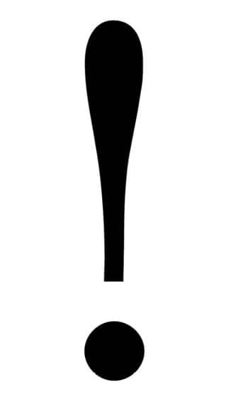

“Tebrik ederim, Ekber’in askeri olmuşsun!”
Konuşan Duran’dı. Terhisine yirmi bir gün kalmıştı. Nöbet tutmazdı. Land şoförüydü. Birlik dışı bütün işlere, görev denir. Duran, göreve giden askerleri ve başlarındaki rütbeliyi taşırdı. Kışlada geçirdiğimiz ilk akşam sıfırlamamızı o yapmıştı.
“Nereden bulaştın oğlum bu işlere?”
Sıfırlama, yatılı okul oyunlarına benzer. Her söylenene inanmaya hazır olan yeni gelenler, psikopat bir komutan konusunda uyarılır. Korku yeterli düzeye eriştiğinde, eski askerlerden biri, uzman çavuş lojmanından yürüttüğü rütbeli kepiyle koğuşa dalar ve önüne ilk çıkana attığı tokatla oyunu başlatır.
“Sana demedim mi, Ekber’e yaklaşma diye? Onun nöbetinde salaklık yapmayacaksın. Herif ruh hastası, amına koyayım.”
İlk emri, yeni gelenlerin duvar dibine sıralanmalarıdır. Eskileri dolapların tarafına gönderir. Aradaysa ranzalar vardır. Ülkenin ve dünyanın neresinde olduklarını hâlâ kavrayamamış olan yeni erler, esas duruşta titrememeye çalışır. Sıfırlamayı yapan asker bağırarak sorar: “Bayrak nedir?” Eğitim birliğinde satılan el kitabının sayfalarından birinde yanıtı yazan bu soruyla karşılaşan acemiler bayılmamaya çalışarak konuşurlar. Hiçbir yanıt beğenilmez. Ve o emir gelir: “Sürün!”
“Neyse, takma kafana. Durum o kadar da boktan değil. Şimdilik kontenjandasın. Daha Ekber’in askerlerinden sayılmazsın. Ama bir salaklık daha yaparsan dönüşü olmaz. Ayağını denk al. Ne deniyorsa onu yap, sonra da al tezkereni, siktir ol git.”
Önlerinde ranzalar duran onlarca çocuk, birkaç saniyelik tereddütten sonra, ikinci emirle kendine gelir: “Sürünün lan, hayvanlar!” Böylece yeni askerler yatakların altından sürünerek geçmeye başlar. Sıfırlamayı yapan, ranzaların arasında koşturur ve başını kaldıranları tekmeler. Bütün sürünenlerin aklında aynı soru vardır: “Bu herifle bir yıl nasıl geçer?” Eski askerlerin durduğu dolap tarafına ulaşanlara yeni bir emir gelir: “Geri dönün! Sürünün!” Eskiler gülüşürken, mutluluğa yakın bir duyguyu sadece koğuşçu hisseder. Çünkü zemin insancıl bir paspasla siliniyordur. Duvar dibine ulaşanlar, ayağa kalkıp esas duruşa geçer. Sürünen kimse kalmadığında, her şeyin bir oyun olduğu açıklanır.
“Sakın o ibnelerle de dolaşma. Şimdi bunlar, yanına gelip askıntı olur. Ağzından laf almaya bakarlar. Zaten kimseyle konuşmuyorsun, değil mi? Böyle devam et. Ekber seni onlarla görürse, onlardan biri sayar.”
Sıfırlamanın şiddeti, yapanın insafına kalmış bir oyundur. Dövmek, küfretmek, komando dansı yaptırmak, şınav çektirmek, yanındakine tokat attırmak, postal boyatmak... Bir merhamet işidir. Az ya da çok. Sıfırlama, eskilerin alkışlarıyla sona erdiğinde yeniler bir rüya görür. Bu rüyada, bir yıllarını geçirecekleri kışladaki en zor anın bu şaka olduğuna inanırlar. Oysa, sıfırlama yapan, o güne kadar tanıdığı bütün komutanları birleştirip tek bir tip yaratmıştır. Dövenle küfredeni, postal boyatanla postal yalatanı daha sonra teker teker tanıyacaklardır. Sıfırlama, askerlik hizmetleri sona erene kadar bitmeyecektir.
“Çavuş ne zaman adam çağırsa, ilk atlayan sen ol. Bütün işlere koş. Fazla değil, birkaç hafta. Ekber’in kulağına mutlaka gider. Elbet affeder.”
Oyunun adı, erlere teslim edilen tüfeklerin gez ayarlarının yapıldığı ilk atışlardan gelir. Bunlara sıfırlama atışı denir. Sıfırlamadan geçen tüfek, teoride, nişan sapması yaşatmaz. Gez ve arpacık hizalaması hatasızdır. Ne sağa ne de sola çeker. Bir çeşit rot balans ayarı. Ancak bir askerin sıfırlanması tüfeğinki kadar kolay olmaz. Davul ve zurna faslını atlatan askeri, kışlanın derinlerine indiğinde bir rütbeli karşılar. Elinde bir kumanda, yanında da dev bir televizyon vardır. Adı, “askerin bir günü” olabilecek, öğretici bir belgeseli, yeni gelenlere izletmektir görevi. Gruplar halinde televizyonun karşısına oturanlar, izlemeye başlarlar. Fazla değil, bir dakika sonra rütbeli filmi ileri alır. Birkaç saniye izletip bir daha ileri alır. Daha sırada bekleyen onlarca izleyici grup olduğu için filmi özetle gösterir. Hiçe yakın bir özetle. İşte o an, sıfırlama yavaş yavaş başlamıştır. O filmin çekilmesini emreden rütbeli ile o filmi ileri sararak izleten rütbeli arasındaki fark berraklaşmaya başlamıştır. İşte o an, teori ile pratiğin arasındaki farkın bir ordu kadar olduğu anlaşılmıştır. Sonrasındaysa, çanta düzenlenmesi anı yaşanır. Başka bir rütbeli, on kişilik gruba, kendilerine verilmiş malzemelerle çantalarını hazırlatır. Emirle tanışılan ilk anlardır. Çanta hazırlamak gibi bir işlemin bile ne kadar keskin, ciddi ve karmaşık olabileceği görülünce sıfırlamanın, er kalındıkça devam edeceğine emin olunur. Keşke bu adam, tatile çıkarken yanımda dursa da valizde bir eksik olmasa, diye düşünürken artık hiçbir şeyin komik gelmediğinin de farkına varılır. Son olarak, askerin saçları sıfıra vurulur ve ordudaki ilk sabaha uyanılır.
Yirmi yıllık hayatlardan bir sıfır yaratmak ve üzerlerine bir asker inşa etmek ciddi bir süreçtir. Ciddi olmayan tek şey, Duran’ın on dakikalık şakasıdır. Yeni devreye sıfırlama çeken usta asker, terhisine kadar onların ağabeyi sayılır. Bir çeşit koğuş ağası. Duran gibi merhametli olanlar tavsiye verir. Tavsiye değerlidir, önemlidir. Deneyim, bir erin gerçek mühimmatıdır. Vücudunu saran şarjörlerden daha iyi korur...
Ben de sıfırlanmıştım. Ama diğerlerinden farklıydım. Sivil hayatı ve davranış biçimini derimden kazımak için kimsenin uğraşmasına gerek kalmamıştı. Ben o işi halletmiştim. Önceki hayatımı sıfırla bitirmiştim. Yenisine aynı yerden başlayabilirdim. Sıfırdan!
Dökülen beton harcının üzerinde ütüye benzeyen bir plaka gezdirilir. Mastardır adı. Mastar çekmek, denir. Harcın üzerindeki izleri siler. Ben de dümdüz gelmiştim orduya. Sırtımda tek bir ayak izi olmadan. Mastarımı çekip öyle gelmiştim. Ne istiyorlarsa inşa edebilirlerdi üstüme. Tabii şimdi de başka ayak izleri beliriyordu, sağımda solumda. Ne de olsa çamurdan gelmiştik. Daima yaştık! Bir mastar da ordunun çekmesi gerekiyordu. Hazırdım. Sürekli sıfırlanmak için hazırdım. Bir olamadan tekrar sıfıra dönmek için...
“Neyse... Yapıştır.”
Parkamın cebinden çıkardığım paketten Duran’a ve kendime sigara çekerken, durumun o kadar da kötü olmadığını düşünüyordum. Duran, çoktan başka bir konuya geçmiş ama ben dinlemiyordum.
“Ulan, sınırda yol devriyesine üst devreler çıkıyormuş, biliyor musun? Gelen geçenden parsayı toplamak için. Sivilde ceplerinde biraz para olsun diye. Ne güzel iş, değil mi lan?”
Sadece duyuyordum. Rüşvetçi erlerle ilgilenmiyordum. Benim düşündüğüm, birkaç hafta dişimi sıkarsam, Ekber’le aramdaki bağı koparabileceğimdi. Ama canımı sıkma ihtimali olan, başka bir şey vardı. O da, haberin, ağır bir koku gibi yayılması. Oysa ben konunun ağır bir kapı gibi kapanmasını istiyordum! Çünkü Ekber’in askeri olmanın ne anlama geldiğini herkes biliyordu. Özellikle de Ekber’in askerleri.
Birlikte dolaşırlardı. Birlikte yer, birlikte sigara içerlerdi. Sürünün içinde küçük bir sürü. Gündüz ve gece çavuşlarının ceplerindeki buruşuk kâğıtlarda adları vardı. Bütün işlere önce onlar koşturulur ve hiçbir anlarının boş geçmemesi için çaba sarf edilirdi. Sıradan erler olmadıkları bilinirdi. Hiçbir zaman hiçbir sıraya girmemiş askerlerdi. Vücutlarında, bağlı olduğumuz alaydaki bütün jilet izlerinden fazla yara taşırlardı. Onları diğerlerinden ayıran en keskin bıçaksa, haklarında verilmiş askeri mahkeme kararlarıydı. Hiçbiri, normal hizmet sürelerinin sonunda evine dönemeyecekti. Çoğunun dönecek bir evi bile yoktu. Aylara varan cezaları vardı. Askeri cezaevinde geçecek günler ve aylar. Personel yetersizliğinden dolayı ertelenmiş hapis cezaları. Bu yüzden farklılardı. Askerlik hayatlarını bilenlerde, korkuyla acıma arasında bir duygu uyandırırlardı... Bir köpekbalığı sürüsü. Yaralı köpekbalıkları. Aralarında dış karakollara gönderilmiş ancak kısa bir süre sonra iade edilmiş olanlar vardı. Dış karakol, sürgün anlamına geliyordu. Ancak gittikleri yerlerde de rahat durmadıkları için tek çare, hepsini bir araya getirip Ekber’in gözetimi altına sokmak olmuştu. Eski askerlerdi. Usta değil. Çünkü hiçbir sorumluluk taşımıyorlardı. Yani bir görevleri yoktu. Sadece nöbet ve angarya. Vergi mükelleflerinin paralarıyla kıçlarını silen anarşistler. Herkesten çok yiyor ve her şeyi talan ediyorlardı. Dayak, tehdit, tutanak. Hiçbiri fayda etmiyordu. Aylardır kışladan çıkmamışlardı. Yarım saatlik izinler, onlar için değildi. Alay komutanı geldiğinde, onlarla karşılaşmaması için birliğin en uzak noktalarında nöbete dikilirler, gözden kaybedilirlerdi. Birliğe atanan yeni uzman çavuşlara ilk uyarı Ekber’in askerleri konusunda gelirdi. “Dikkat edin!” denirdi. “Bu heriflere dikkat edin.”
Yılda üç kez birliğe gelen ve dört ay sonra basıp giden üniversite mezunu, kısa dönem askerlerin en korktuğu adamlar bunlardı. “Merhaba arkadaşlar” diye başlayan şanssız ancak nazik tanışma girişimleri, “Seni de sikeriz, arkadaşlarını da!” cümlesine çarpardı. Çarpmanın etkisi, haklarında anlatılan, banyo tecavüzleri efsanesiyle şiddetlenirdi. Hepsi de benim gibi RDM’ydi. Ağır RDM’ler. Tatvan’dan aldıkları reçetelerde yazan ilaçlar Ekber’de durur, günlük dozlarını almak için her gün kapısında beklerlerdi. Eğitim birliğinden alaya gelmiş, orada derhal fark edilip, ilçeye sürülmüşlerdi. Mümkün olsaydı İran’a da sürülebilirlerdi. Sınır dışı! Ama ilçe jandarma son noktaydı. Varlıkları kabul edilemez askerler. Olmaması gereken erler.
Kamuflajları bile farklıydı. Herkesten daha çok süründükleri ve çalıştıkları için renkleri fazlasıyla solmuş, başka bir ordunun üniformasına dönüşmüştü. Erler arasındaki bölgecilik ve devrecilik anlayışı onlarda yoktu. Kimin nereli olduğu ve birliğe ne zaman katıldığı önemsizdi. Onlar, nerede doğmuş olurlarsa olsunlar, Ekber’in askeriydiler. Son durak orasıydı. Yolculuğun nerede başladığı kimsenin umurunda değildi. Herkesten daha kirliydiler. Yüz hatları, her gün taşıdıkları kömürün tozundan keskinleşmişti. Yüzlerindeki bütün çizgiler çok daha siyah ve çok daha belirgindi. Karakalem resimleri andırıyorlardı. Opera makyajı. Aramızda kuliste dolaşır gibi geziniyorlardı. Esmerleşmiş alınları ve elmacık kemiklerinin arasında, gözleri büyük ve fazla beyaz görünüyordu. Madencilere benziyorlardı. Siyah beyaz çekilmiş madenci fotoğraflarına. Elleri yaralıydı. Kamuflajlarında siyah lekeler vardı. Kurumuş kan. Kendi kanları. Kokuyorlardı. Simsiyah kokuyorlardı. Eğer onları erken terhis etmenin herhangi bir yolu olsaydı, kimse bir saniye bile tereddüt etmezdi. Onlardan kurtulmanın bir yolu olsaydı, herkes oradan giderdi. Ama öyle bir yol yoktu. İdare ediliyorlardı. Edilebildikleri kadar. Ekber tarafından. Katır gibi çalışmalarına rağmen cezalandırıldıkları her gün içinde mutlaka sorun çıkaracak zaman ve gücü bulurlardı. Sayıları yediydi. Atatürk büstünün yanında yıkılana kadar çaprazda duran onlardı. Sabah içtimalarında komando dansı yaparken Ekber’i çıldırtacak kadar dayanıklı çıkanlar onlardı. Çiğ etle beslenen vahşi köpekler. Dövüldükçe sertleşmiş derileri, küfür yedikçe bilenmiş dilleri vardı. Bölüğün nöbetlerinin yarısını onlar tutuyordu. Günde on ya da on iki saat. Koğuşun en dip ranzalarında yatıyor, yemek duası etmeyi reddettikleri için yemekhaneye giremiyorlardı. Bir ellerinde tabldot, diğerinde kaşık, eksi yirmi derecede ayaküstü çorba içiyorlardı.
Kısacası, RDM olmam dışında onlarla hiçbir ortak noktam yoktu. Onların askerliğiyle benimkinin hiçbir ilgisi yoktu ve olmasını da istemiyordum. Ölmeye gelmiş gibilerdi. Kendilerine acı çektirmeye gelmiş gibi. Askerlik, hayatlarının son evresiymiş gibi davranıyorlardı. Dönecek bir yerleri ve dönmeye niyetleri yokmuş gibi.
Onlardan biri olmayacaktım. Adım asla onlarınkilerle birlikte anılmayacaktı. Duran’ın söylediği gibi yapacaktım. Her işe koşacak, her şeye boyun eğecektim. Daha da küçülecek, kara gömülecektim. Kimse beni göremeyecekti. Ekber varlığımı unutacaktı. Yok olacaktım. Hiçbir kuralı çiğnemeyecektim. Tek bir hata yapmayacaktım. Siyah kaplı defterimi kazanda yakacaktım...
Evet, Duran’la karşılıklı sigara içerken bunları düşünüyor, kendime böylesi sözler veriyordum. Yeminler ediyordum. Kararlar alıyordum. Küçük hayatımdaki büyük kararlar. Eskiden aldıklarım gibi. Saçlarım varken. Adımın önünde Jandarma Er yazmazken. Üniversitenin ikinci sınıfından ayrıldığım gün askerlik şubesinin kapısından girme kararım gibi. Müthiş kararlarımdan biri! Çıkarımı ne kadar iyi hesaplayabildiğimin en büyük kanıtı! Kendime verdiğim değerin muhteşem ölçüsü!
Ama çok sürmedi. Süremedi. Planımın alt üst olması için bir sonraki nöbetin gelmesi yetti.
Ana kapıdaydım. Bölüğün en ağır nöbet kulesinde. En ağır çünkü oradaki çelik yelek on bir kiloydu. En ağır çünkü bölük komutanı kışlaya girip çıkmak için orayı kullanıyordu. En ağır çünkü karargâh binasının bütün pencereleri orayı görüyordu. Durduğum yer, Jandarmanın vitriniydi. Durduğum yer, sivillerin merkez karakola girmek için geçtikleri yerdi. Kimliklerini alıyor, isimlerini bir deftere kaydediyor, üzerlerini arıyor, varsa silahlarını alıp karşılığında numaralı plastik fişler veriyordum. Normalde bu işlemleri nizamiye çavuşunun yapması gerekiyordu. Ama sürekli tekrarlandığı gibi, personel yetersizliği vardı. Yeterli değildik. Hiçbir zaman da olamadık. Gelenlerin hemen hepsinin silahı vardı. Muhtarlar, geçici köy korucuları, gönüllü köy korucuları, ihbarcılar, av tüfeği ruhsatı takipçileri, canı sıkıldığı için çay içmeye gelenler, jandarmayla arasının iyi olduğunu hasımlarına belli etmeye çalışan üçkâğıtçılar, petrolcüler, yeşil kartçılar, saklı nüfus yakınları, kamyonu bağlandığı için trafikçilere yalvarmaya gelenler, kızları evden kaçanlar, kızları eve hamile dönenler, kan davalılar ve yine ihbarcılar. Soğuğa rağmen geliyorlardı. Kara rağmen. Buza rağmen. Her şeye rağmen geliyorlardı...
Bir ara önümdeki bariyerin ardında, yerde parlak bir leke gördüm. Başımı kaldırdığımdaysa bulutların arasına sıkışmış bir güneş. Öyle bir yere düşmüştü ki ışığı, iki adım ötemdeydi. Bölük kapısının ardında. İki adımda basardım üstüne. Ama yasaktı tabii ki dışarı çıkmam. Oysa ne güzel duruyordu orada. Vücudum ancak bir ceset kadar sıcak, gözlerim gördüğüyle ısınıyordu. Kar parlıyor, kimse görmese de eriyordu. Üstüne bassam ısınacakmışım gibi geliyordu. Sonra yavaş yavaş hareket etmeye başladı. Bana doğru yaklaştı. Tam ayağımın ucuna gelmişti ki voltaj düştü. Derhal hesap sormak için kaldırdım başımı. Öne geçme sırası bulutlara gelmişti. Kim öndeyse onun hükmü vardı. Oysa bir ara bütün beyazlar kaybolmuştu. Masmavi bir ayaz perdesi çekilmişti gökyüzüne. Bu bulutlar da nereden çıkmıştı? Aslında anlayabiliyordum. Onlar bulut değildi. Dünyanın etrafında bir cam vardı ve güneşin sıcak nefesi üzerinde buğu yapıyordu. O cam yüzünden ısınamıyordum. Allahın belası cam yüzünden güneşin ışığı yanıyor ama ısıtmıyordu. Bozuk bir klima gibi. Sonra yeniden bembeyaz bir kar perdesi çekildi gökyüzüne. Neyi var neyi yok döküldü üzerime. Kar başladı ve ışık da kalmadı. Ben o sırada güney yarımkürede sörf yapan ibnelere değil, önümden iki kazakla geçip gidenlere imreniyordum. On dakikalığına sokağa çıkmış ve evlerine dönecek olanlara. Çünkü bu soğuğu ancak dört duvar ve bir çatı durdurabilecekken, ben iki eldiven, üç çorapla dayanmaya çalışıyordum.
Bölüğün en ağır nöbetini tutmanın tek eğlenceli yanı, gelenlerin isimleriydi. Resim diye bir adam gelmişti az önce. Çıkarken, “Al bakalım resim kâğıdını!” deyip uzatmıştım kimliğini. Sonra bir Tozbey gelmişti. Yanında da bir Dedo. Daha sonra da bir Yado gelmişti. Peşinden de Vezir ile Yami. Bir de Balyoz ile Kalabalık. Sonra da bir Siyam. Gelenlerin arasında Kazo da vardı. Korucu başı Kazo.
Tanıyordum. Gönüllü değil, geçici köy korucularından. Gönüllüleri önemsemezdik. Onlar sadece silah ruhsatı karşılığında korucu olur, sonra da bir daha yüzlerini görmezdik. Ama geçiciler, leşleri olanlardı. Maaş alanlar, silah verilenler, PKK’nın köylerine inmekte tereddüt ettiği adamlar. Savaşmayıp sevişmek yerine savaşla sevişenler! Kazo da bunlardan biriydi. Yirmi bir yıldır geçici köy korucusuydu. Bu da onu hayli kalıcı yapıyordu. Selamlaştık. Üzerini aramama fırsat vermeden silahını çıkarıp teslim etti. Tam o sırada ölü piç kurusunu duydum:
“Eğer bana bir daha sırtını dönersen seni pişman ederim.”
Tabii ki cevap vermedim. Kazo’yla ilgilenmeye çalışıyordum. Nerede olduğumu, neden orada olduğumu hatırlamaya çalışıyordum. Bölük komutanıyla görüşecekti. Postasına haber vermek için kuledeki telefonu kullandım.
“Beni dinle asker! Beni kızdırırsan buradan asla çıkamazsın.”
Hâlâ cevap vermiyordum. Sadece Kazo’ya bakıyordum. Gözlerinin içine. Aramızdan kar geçiyordu. Kuledeki telefon çaldı. Açtım. İzin çıkmıştı. Tam kapatacaktım ki “Benimle şimdi konuşmazsan seni asla terk etmem!” cümlesini duydum. Müthiş bir karar daha verdim. Her zamanki gibi. Kazo’nun içeri girmesi için sessizce kenara çekildim. Raylı kapıyı kapatırken duymam gereken gıcırdama sesi yerine şu geldi:
“Her şeyi, ama her şeyi sen istedin. Bunu sakın unutma!”
Fazla değil, on dakika sonra Kazo çıkıp gitti. Her şey normaldi. Ta ki bölük komutanının postası Cafer yanıma gelene kadar. Yüzünde bir tokat izi asılıydı.
“Ne yaptın lan sen? Ne yaptın, amına koyayım?”
“Neyi ne yaptım?” diyordum. Neden söz ettiği hakkında hiçbir fikrim yoktu.
“Herifte silah varmış. Çekip yüzlüğün masasına koydu. Komutanım, dedi. Sen benim işimi halletmezsen ben de bununla vururum kendimi!”
“Ha siktir!”
“Yüzlük çıldırdı!”
O andan sonra Cafer’i dinlemedim. Yanağındaki tokat iziniyse kesinlikle merak etmedim. O andan sonra çok az şey duydum. Çok uzaktaki bir mobileti, bir de caddedeki okuldan gelen İstiklal Marşı’nı seçti kulaklarım. Neden onlar? Bilmiyorum. Çelik yeleğin ağırlığı artmaya başladı. Üşüyen parmaklarımın çıktıkları yere girdiğini, başımın, kollarımın ve bacaklarımın çelik yeleğin içine doğru çekilmeye başladığını hissettim. Kabuğuna çekilen bir kaplumbağa. Kazo’nun üstünü aramamış ve üzerindeki ikinci silahı almamıştım. O da bu silahı bölük komutanının karşısında çekmişti. Tabii ki onu vurmayı düşünmüyordu. Yüzbaşıyı öldürmenin bambaşka yolları vardı ve bunların hiçbiri karargâh binasından geçmiyordu. Ama silahlı bir adamın odasına kadar çıkmasında tek sorumlu bendim. Ölü adama direnmekle meşgul olduğum için kontrolü tamamen kaybetmiştim. Benzer hatalarda, er her şeyle suçlanabilirdi. Hatta siville işbirliği yapmakla bile suçlanabilirdi. Çünkü ne de olsa gerçek bir ordu personeli değildi. Zamanı gelince yok olup gidecekti. Yıllar sonra orduevinde karşılıklı oturup eski günlerin hesabının yapılabileceği bir asker değildi. Nereden geldiği ve nereye gideceği belli olmayan bir asker. Bir ordu için en tehlikeli varlık. İçinde bir yıl geçirdiği karakolu, terhis olduktan bir hafta sonra basan eski asker-yeni terörist hikâyeleri bütün birliklerde anlatılırdı...
Cafer’i duymuyordum. Ama o konuşmaya devam ediyordu. Açılıp kapanan ağzına bakıyordum. Diline, dişlerine. Başkasının acısını ve hatalarını kanırtmakta usta olan erlerden biriydi. Mahvolacağımı, ebemin sikileceğini, benim için çok üzüldüğünü ama elinden hiçbir şey gelmeyeceğini anlatıyor, bir yandan da sigarasını yakıyordu. Cafer de nöbet tutmuyordu. Hiç tutmamıştı. Nöbetin bitmesine bir buçuk saatten fazla vardı. Bu yüzden, bize doğru yaklaşan teçhizatlı erin nereye gittiğini anlayamadım. Bir yere gitmiyordu. Bana geliyordu.
“Yeleği çıkar. Nöbeti almaya geldim. Çavuş gönderdi. Ekber seni çağırıyormuş.”
Herhangi bir yerde ve zamanda söylendiği zaman, son derece basit görünen bu cümleler, askerlik hayatımın cehenneme dönüşmesinin açılış konuşmasıydı. Şeytan, Ekber oluyordu. Bense sonsuza dek yakılacak günahkâr. Bölüğün mükemmel askeri düzenini bozmuş, yüzbaşının ölümüne sebebiyet verecek bir olayın gelişmesine neden olmuştum. Bütün bunlar o ölü orospu çocuğu yüzünden olmuştu. Zihnimi kemirdiği, davranışlarımı sakatladığı ve neden-sonuç ilişkisi içinde düşünmemi engellediği için olmuştu. İntikam mı? Nasıl alabilirdim ki? Herif ölüydü!
Başım, kollarım ve bacaklarım çelik yelekten çıktılar. Miğferimi yeni nöbetçinin ellerine bıraktım. O an ilk kez kendimi vurmayı düşündüm. Hemen orada. Kurma kolunu çekip, emniyeti açıp tetiği düşürmeyi düşündüm. Tüfeğe hakimiyet faktörleri başlıklı yönerge sayfasında, tetiği eze eze düşürmekten söz ediliyordu. Ben de yapabilirdim. Eze eze düşürebilirdim. Tetiği ve kendimi. O an, herhangi birinin bu düşüncemi sezip sezmediğini bilmiyorum ama Ekber, odasının camına yapışmış bana bakıyordu. Göz gözeydik. İki hayvan gibi. Beslenme zincirinde hangimizin üstte olduğu belirsizdi ama emir komuta zincirinin boynuma dolandığı kesindi. Daha fazla bakamadım ve gözlerimi kapadım.
Tekrar açtığımda doldur-boşalt istasyonundaydım. Duran’la aynı gün birliği terk edecek olan gündüz çavuşunun kırmızı yüzündeki devrilmiş kaşları görebiliyordum. Cafer kadar acımasız değildi çünkü onun kadar şanslı değildi. Eksi yirmilerde nöbet tutmuştu. Acıyı tanıyordu. Belki de bu yüzden konuşmuyordu. Söylenecek bir şey olmadığını bildiği için. Konuşmak yerine elindeki nöbet çizelgesini inceliyordu. Yerime gönderdiği adamın sonraki nöbetlerini kaydırmaya çalışıyordu. O sırada nöbetçi astsubayın çavuşu çağırdığını duydum. Elindeki kâğıdı cebine sokup, sesin geldiği yere, yemekhaneye doğru koştu. Başımı çevirdim ve önünde durduğum kırmızı bidonun ortasındaki delikle göz göze geldim. Doldur-boşalt istasyonunda emirsiz hareket edilemediği için çavuşun dönmesini beklemeye başladım... Bekledim... Bekledim... Bekledim...
“Ekber bekliyor, asker. Geç kalıyorsun.”
Ses, arkamdan gelmişti. Ama dönüp bakmıyordum. Bakmayacaktım. Ben de biliyordum Ekber’in beklediğini. Ben de biliyordum, Ekber’e geç kalmanın ne demek olduğunu. Ama çavuş bir türlü gelmiyordu. Saniyeler geçiyor, dakikalar devriliyordu. Ekber’in yüzünü görüyordum. Şişen yüzünü. Patlamak üzere olan yüzünü.
“Doldurt-boşaltını ben yaptırayım, asker. Boşuna bekleme.”
Çavuş gelmiyordu. Ekber’in yüzü biraz daha şişmişti ve hâlâ beni bekliyordu. Gitmem gerekiyordu. Bir an önce. Bir an önce küfrümü ya da tokadımı yemem gerekiyordu. Ne olursa. Bir an önce. Oysa bir salak gibi duruyordum. Hatta esas duruşta bekliyordum.
“Namlu bidona!”
Namluyu bidonun deliğine soktum.
Kurma kolunu çek!”
Çektim.
“Bırak!”
Bıraktım.
“Emniyet aç!”
Açtım.
“Tetik düşür!”

Patlama, ölüm kadar ani geldi. O kadar ani geldi ki biri öldü sandım. O kadar ani geldi ki çevremde ceset aradım. O kadar ani geldi ki kabul etmedim. Geri göndermeye çalıştım. Ama olmadı. Atım yatağından fırlayan boş kovan çoktan bidona çarpıp yere düşmüştü. Bidon deliğinden sızan incecik duman ve incecik kokuyu içime çektiğim anda çavuşun sesiyle uyandım.
“Dur! Önce şarjörü çıkar! Kurma kolunu çek, bırak. Tetiği düşür. Emniyete al. Tamam, şimdi silahı yavaşça bidondan çek, yere bırak.”
Çavuşun vücudunun devamı gibiydim. Söylediği hatta düşündüğü her şeyi yaptım. Şarjörü çıkarıp hücum yeleğimdeki cebe soktum. Namluyu bidondan ayırıp, silahı yere bıraktım. O an ben kendimde değildim. Durumu derhal kavramış ve sorunu çözmekte olan çavuşun içindeydim. Saklandığım yer orasıydı. Nöbetçi astsubayın bağırmasıyla çavuşun içinden çıkıp kendime geldim.
“Hayvan oğlu hayvan! Ne yapıyorsun lan sen? İt oğlu it! Bizi mi vuracaksın, piç!”
Karışmış, düğüm olmuş bir misinaydım. Kesilip atılması gereken bir düğüm. Patlamayı duyar duymaz yemekhaneden çıkıp gelmiş askerler, çavuş ve sürekli küfreden nöbetçi astsubay tarafından kuşatılmıştım. İçi kum dolu bir bidona ateş etmiş olmama rağmen bir insan vurmuşum gibi bana dehşetle bakan bütün gözlerin arasında birini fark ettim. Sonra bir diğerini. Sonra bir başkasını daha. Onlar korkmamıştı. Onlar dehşete kapılmamıştı. Onların dökülen salyaları yoktu. Onlar gülümsüyorlardı. Onların umurunda değildi. Durdukları yerden bana bakışlarıyla dokunuyorlardı. Sırtıma vuruyorlar, sigara ikram ediyorlardı. Siktir et, diyorlardı. Siktir et! Onlar Ekber’in askerleriydi. Ekber’in kendisiyse kalabalığı yararak bana yaklaşıyordu. Kaçacak bir yer yoktu. İradeyle örülmüş duvarlar. O kadar ani vurdu ki öldüm sandım. O kadar ani vurdu ki dirildim.
Yemekhanedeki bir tabelada “İlçe Jandarma Komutanlığında ... gündür olay ve kaza meydana gelmemiştir” yazıyordu. Noktaların üzerinde mavi kalemle yazılmış bir 269 sayısı vardı. Yönergelere göre, doldur-boşalt bidonunu vurmak bir kazaydı. Ama 269 sayısı, yanlışlıkla, silinmeyen bir kalemle yazılmış olduğu ve denetlemede hesap vermek istenmediği için 269 vukuatsız gün sayısı asla değişmedi. Yıllarca da değişmeyecekti. Bütün kışlada olduğu gibi, olay ve kaza tabelasında da, zaman, duvara asılı olarak, duracaktı. Kimse bizimle başa çıkamazdı. Gerçek bile!